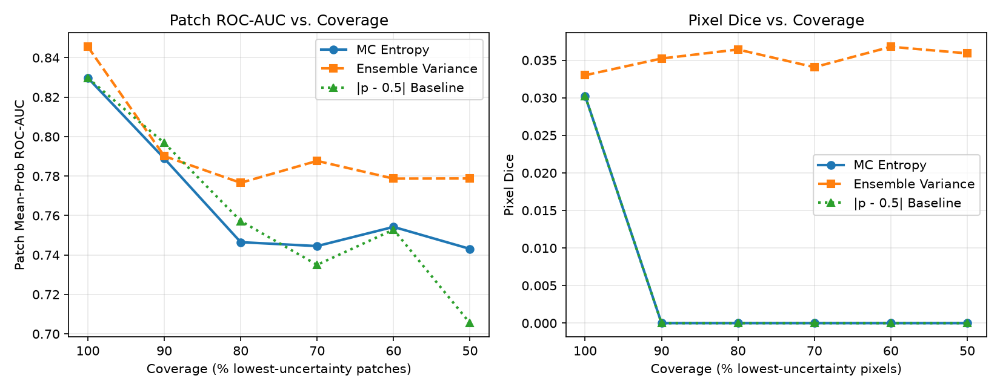

Detection, Pixel-Level Localization, and Uncertainty Analysis of Lunar South Polar Radar Anomalies in Chandrayaan-2 DFSAR L-Band Quad-Pol Data
CPR > 1.0 & DOP < 0.13 on 7×7 multilooked data) and do not directly confirm physical water ice.
We evaluate deep learning on Chandrayaan-2 DFSAR Level-1A slant-range imagery (ch2_sar_ncxl_20260308t062017233, rows 90,624–319,812, 13,886 leak-free patches with a 256-row azimuth guard buffer) using strictly intensity-only [HH, HV, VV] log-intensities. Four empirical findings emerge:
(1) on patch-level binary classification, CustomCNN ties LogisticRegression (0.8124 ± 0.0408 vs. 0.8118 ± 0.0460 5-fold blocked-strip CV ROC-AUC);
(2) ImageNet pretraining fails to transfer to SAR (0.7970 vs. 0.8301 ROC-AUC from scratch), while in-domain SimCLR SSL (0.7892 at 10% labels) beats ResNet_scratch (0.5250) but does not beat LogisticRegression (0.8036) or CustomCNN (0.8080);
(3) pixel-level IceUNet achieves 0.0093 ± 0.0003 Pixel PR-AUC (17.6× lift over 0.0527% baseline) and 0.0110 (20.9× lift) as a 3-seed ensemble, while low Dice (~0.03; 0.0539 conditional on positive patches) reflects a physical phase-information ceiling; and
(4) Thin-Plate-Spline georeferencing over 676 GCS_MOON GCPs yields ~282 m (~300 m) hold-out accuracy and 92.79% footprint overlap with the official ISRO SRI HH product.
| Model | Test ROC-AUC (N=2,018) | Test PR-AUC (Base 16.45%) | F1 (Val Th) | Clean ROC-AUC (Ablation) |
|---|---|---|---|---|
| CustomCNN (3 seeds) | 0.8379 ± 0.0007 | 0.5485 ± 0.0102 | 0.5216 ± 0.0054 | 0.9103 ± 0.0021 |
| IceUNet (3 seeds, mean_prob) | 0.8335 | 0.5404 | 0.5185 | 0.9035 |
| IceUNet (Optuna, 1 seed) | 0.8497 | — | — | — |
| ResNet_scratch (3 seeds) | 0.8301 ± 0.0064 | 0.5203 ± 0.0135 | 0.5240 ± 0.0057 | 0.8961 ± 0.0119 |
| LogisticRegression | 0.8207 | 0.4976 | 0.5086 | 0.8811 |
| ResNet_SSL (100% labels) | 0.8093 ± 0.0022 | 0.5231 ± 0.0140 | 0.4733 | — |
| ResNet_pretrained (3 seeds) | 0.7970 ± 0.0123 | 0.4529 ± 0.0126 | 0.4687 ± 0.0280 | 0.8633 ± 0.0079 |
Across 5-fold blocked-strip CV over all 20 strips (256-row buffer), CustomCNN (0.8124 ± 0.0408 ROC-AUC) ties LogisticRegression (0.8118 ± 0.0460). Circularity ablation confirms 80.9% (250/309) of CustomCNN false positives are 1–4 px transition patches.
| Model | Pixel PR-AUC | Lift vs. Prevalence (0.0527%) | Dice (Val Th) | Cond. Dice (Pos Patches) | IoU (Val Th) |
|---|---|---|---|---|---|
| Baseline: HV/HH Ratio | 0.0011 | 2.1× | 0.0036 | — | 0.0018 |
| Baseline: Pixel LogReg | 0.0012 | 2.3× | 0.0016 | — | 0.0008 |
| IceUNet (3 seeds) | 0.0093 ± 0.0003 | 17.6× | 0.0266 ± 0.0045 | 0.0377–0.0519 | 0.0135 ± 0.0023 |
| IceUNet MC Dropout (T=20) | 0.0094 | 17.8× | 0.0302 | — | 0.0153 |
| IceUNet (Optuna Val-Tuned) | 0.0108 | 20.5× | 0.0286 | — | 0.0145 |
| IceUNet 3-Seed Ensemble | 0.0110 | 20.9× | 0.0334 | 0.0539 | 0.0170 |
Ground-truth DOP and CPR require inter-channel complex phase coherence, which is excluded from the intensity-only [HH, HV, VV] inputs—creating an information ceiling that caps pixel Dice at ~0.03. Connected-component post-processing (≥5 px) preserves or improves pooled Dice (0.0203 → 0.0230 seed 2024; 0.0334 ensemble).

pos_weight=50) + Dice loss yields low ECE (0.04307 MC, 0.04794 ensemble) but negative Brier Skill Score (-13.07 / -14.64) due to probability inflation (mean p=0.2656–0.2886 on positives, 0.0426 on background vs. 0.000527 prevalence).p near 0.5: GT Interior is highest (0.51350), followed by the 1–2 px boundary ring (0.46635) and far background (0.14280).50% coverage, Ensemble Variance (0.7788) and MC Entropy (0.7431) outperform |p - 0.5| (0.7055) on Patch ROC-AUC; Ensemble Variance also improves Pixel Dice (0.0330 → 0.0368 at 60% coverage).90%, 110,521 non-zero params) is parameter reduction only (~11.2 ms dense CUDA latency). Structured channel pruning at 30% (base_ch=17) gives no speedup (15.54 ms vs. 12.94 ms); 50% (base_ch=12) achieves 9.81 ms (1.32× speedup).
|p - 0.5| baseline.Normalized Thin-Plate-Spline warping over 676 GCS_MOON GCPs (R = 1,737,400 m) achieves 0.000 m in-fit residual, ~282 m (~300 m) 5-GCP hold-out residual, and 92.79% footprint overlap with the official ISRO SRI HH product (25 m/px).